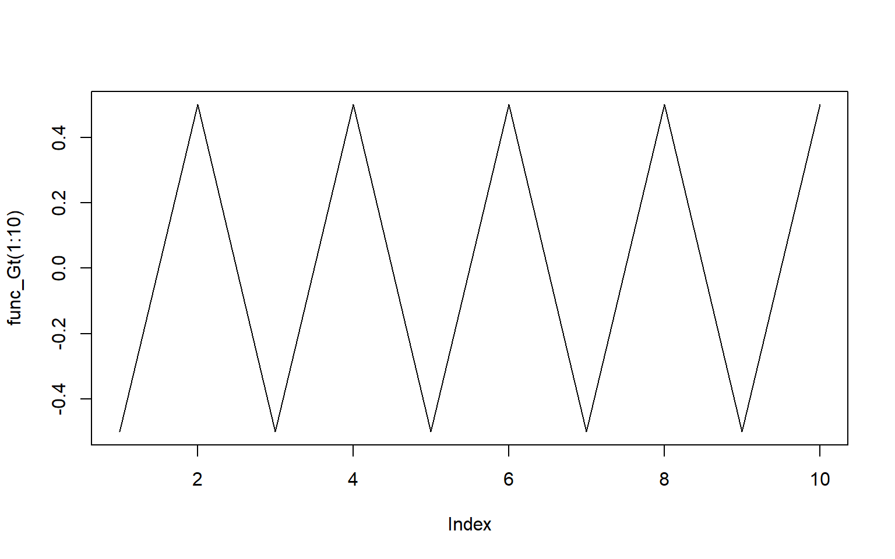
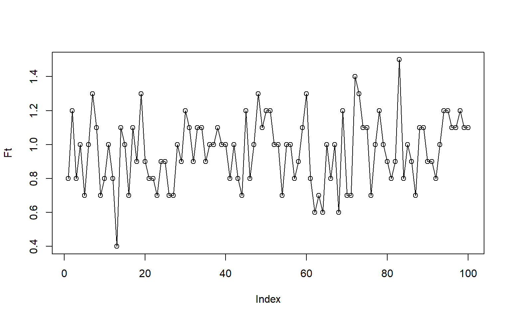
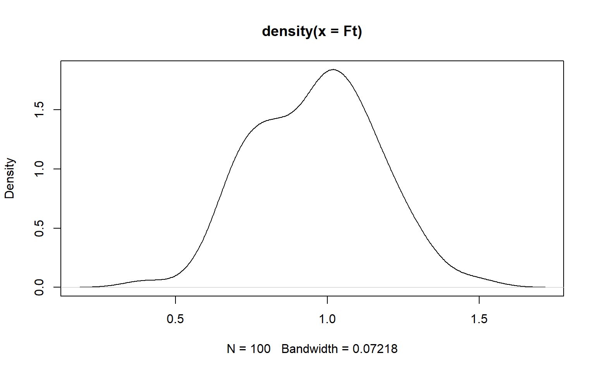
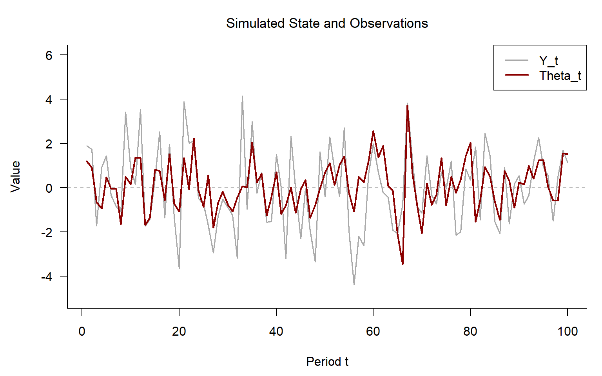
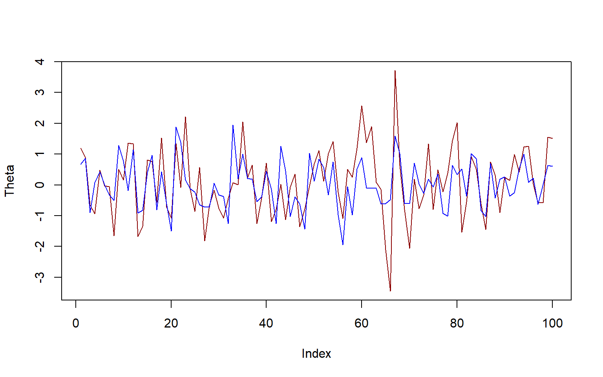
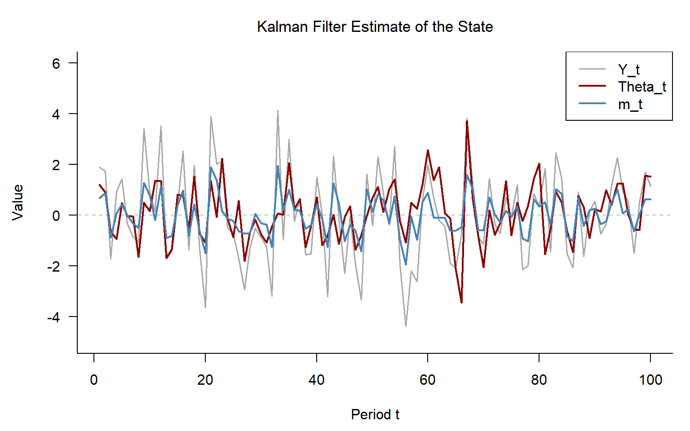
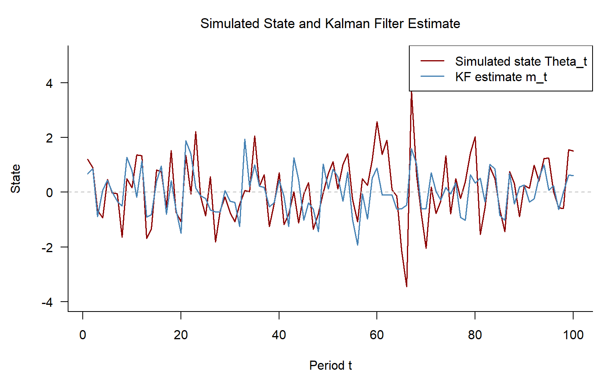
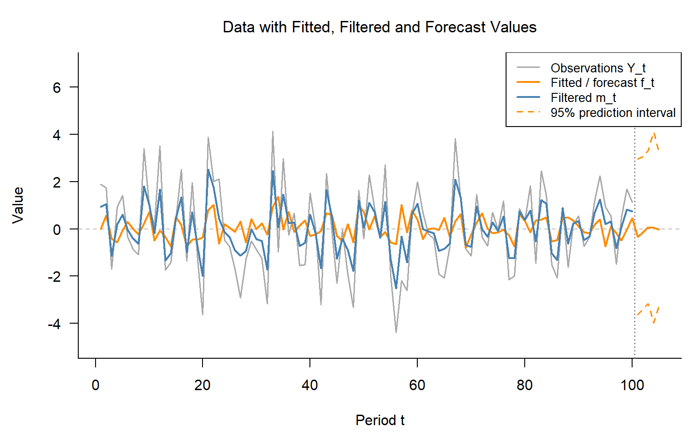
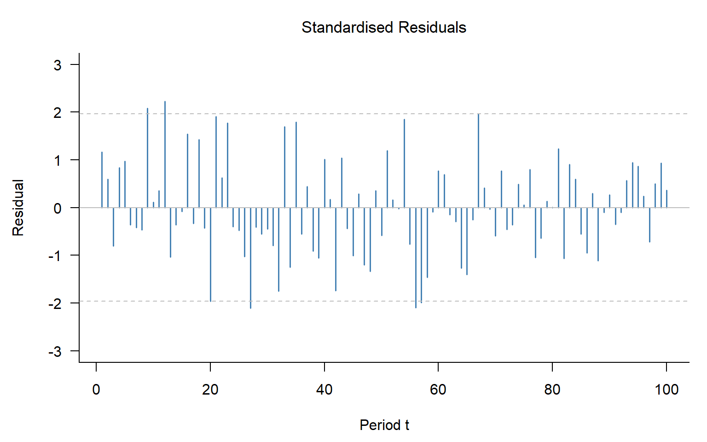
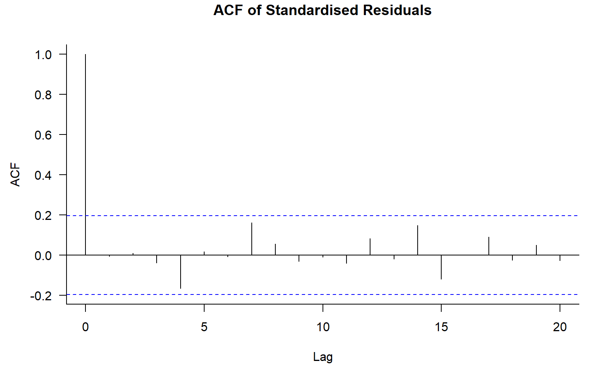

Code
set.seed(1997)
n <- 100
V <- 2
W <- 1Kalman filter simulation study (Part 2, state space models and the Kalman filter; implementation project; covers computational / statistical programming).
This project asks whether my own Kalman filter, written from first principles, can recover the hidden state of a simulated state space model and estimate its two error variances. It is based on tutorial Question 1 and Meinhold and Singpurwalla (1983). I simulated 100 observations from \(y_t = F_t\theta_t + v_t\) and \(\theta_t = G_t\theta_{t-1} + w_t\), with \(V = 2\), \(W = 1\), \(G_t = (-1)^t/2\) and \(F_t \sim N(1, 0.2^2)\), using set.seed(1997). I coded the filter by hand, first for one observation and then as a loop, and wrapped it in a function that returns the negative log-likelihood from the prediction error decomposition. I estimated \(V\) and \(W\) by maximum likelihood with optim() on the log scale, made 5-step forecasts with prediction intervals by treating future observations as missing, and checked the standardised residuals with an ACF plot and a Ljung–Box test.
The filtered state follows the turning points of the true state but is smoother and misses the extremes. The maximum likelihood estimates are \(\hat V = 1.58\) and \(\hat W = 1.39\), against the true values of 2 and 1, with a negative log-likelihood of 105.915 compared with 106.158 at the true values. The total noise is about right, but it is split differently between the two equations, which matches the slides’ warning that the variances can be hard to separate. The forecasts decay quickly towards zero because each step multiplies by ±0.5, and the prediction intervals are wide. The standardised residuals show no significant autocorrelation, so the filter has captured the dependence in the data.
If I did this again, I would first check my filter against Table 1 of Meinhold and Singpurwalla (1983), repeat the simulation many times to see whether the variance estimates are biased or just vary from sample to sample, and try several starting values for optim(). A full detailed analysis follows below.
First we set starting values and a seed for reproducibility.
set.seed(1997)
n <- 100
V <- 2
W <- 1Then we define functions for each part of the Kalman Filter. The plot below also helped confirm the expected cyclical behaviour.
func_Gt <- function(t) {
((-1)^t)/2
}
plot(func_Gt(1:10),type = "l")
Then we define functions for Theta, W amd V.
func_wt <- function(W){
rnorm(1,0,sqrt(W))
}
func_vt <- function(V){
rnorm(1,0,sqrt(V))
}
func_Theta_t <- function(t,Theta_t1,wt) { # Theta_t1 is Theta_{t-1}
func_Gt(t)*Theta_t1 + wt
}Then we simulated \(F_t\) and the below plots show the generated data and I used a density plot to see if the data was what I expected, and it is distributed correctly. I then also generated the the starting \(\theta_0\) value.
Ft <- rnorm(100,1,0.2)
Ft <- round(Ft,1)
plot(Ft, type = "o")
plot(density(Ft))
Theta_0 <- rnorm(1,0,sqrt(1))
Theta_0 |> signif(3)[1] 0.0798Then I made a function for generated the observations (the \(y_t\)) and tested it worked as expected which it did.
func_yt <- function(Ft,t,vt,Theta_t){
yt <- Ft[t]*Theta_t + vt
yt
}
yt <- c()
vt <- func_vt(V)
wt <- func_wt(W)
Theta_t <- func_Theta_t(t=1,Theta_0,wt)
yt <- c(yt,func_yt(Ft,t=1,vt,Theta_t))
#yt
# plot(yt)
# plot(density(yt))Then I made lists and a loop to simulate the 100 states and observations.
Y <- c()
Theta <- c()
Theta_t1 <- Theta_0
for (t in 1:100) {
vt <- func_vt(V)
wt <- func_wt(W)
Theta_t <- func_Theta_t(t,Theta_t1,wt)
yt <- func_yt(Ft,t,vt,Theta_t)
Y <- c(Y,yt)
Theta <- c(Theta,Theta_t)
Theta_t1 <- Theta_t
}Figure 12.1 below shows the underlying state as well as the observations.
par(mar = c(4.5, 4.5, 3, 1))
plot(Y, type = "l", lwd = 1.5, col = "darkgrey",
main = "Simulated State and Observations",
ylab = "Value", xlab = "Period t",
ylim = c(-5, 6), las = 1, bty = "l",
cex.main = 1.1, font.main = 1)
abline(h = 0, col = "grey", lty = 2)
lines(Theta, lwd = 2, col = "darkred")
legend("topright", legend = c("Y_t", "Theta_t"),
col = c("darkgrey", "darkred"), lwd = c(1.5, 2))
The observations in Figure 12.1 closely follow the state line, but have more variance.
Then I built the Kalman Filter and checked it worked as intended using the first observation.
m0 <- 0
C0 <- 1
Gt <- as.matrix(func_Gt(t=1))
Wt <- as.matrix(W)
# Gt
# Wt
Rt <- Gt %*% C0 %*% t(Gt)+ Wt
at <- Gt %*% m0
# Rt
# at
Vt <- as.matrix(V)
ft <- Ft[1] %*% at
Qt <- Ft[1] %*% Rt %*% t(Ft[1]) + Vt
# Vt |> round(3)
# ft |> round(3)
# Qt |> round(3)
Kt <- Rt %*% t(Ft[1]) %*% solve(Qt)
yt <- Y[1]
et <- yt - ft
mt <- at + Kt %*% et
Ct <- Rt - Kt %*% Ft[1] %*% Rt
# Kt |> round(3)
# yt |> round(3)
# et |> round(3)
# mt |> round(3)
# Ct |> round(3)
round(c(R = Rt, a = at, f = ft, Q = Qt, K = Kt, e = et, m = mt, C = Ct), 3) R a f Q K e m C
1.250 0.000 0.000 2.800 0.357 1.891 0.675 0.893 Happy with the values above, we then convert the Kalman Filter code for one observation into a loop that can be applied to the entire dataset. Figure 12.2 below shows the true state and the estimated state using the Kalman Filter and our inital values of \(V = 2\) and \(W = 1\).
m0 <- 0
C0 <- 1
m_t1 <- m0
C_t1 <- C0
m <- c()
C <- c()
a <- c()
R <- c()
f <- c()
Q <- c()
e <- c()
for (t in 1:100) {
Gt <- as.matrix(func_Gt(t))
Wt <- as.matrix(W)
Rt <- Gt %*% C_t1 %*% t(Gt) + Wt
at <- Gt %*% m_t1
Vt <- as.matrix(V)
ft <- Ft[t] %*% at
Qt <- Ft[t] %*% Rt %*% t(Ft[t]) + Vt
Kt <- Rt %*% t(Ft[t]) %*% solve(Qt)
yt <- Y[t]
et <- yt - ft
mt <- at + Kt %*% et
Ct <- Rt - Kt %*% Ft[t] %*% Rt
m <- c(m, mt)
C <- c(C, Ct)
a <- c(a, at)
R <- c(R, Rt)
f <- c(f, ft)
Q <- c(Q, Qt)
e <- c(e, et)
m_t1 <- mt
C_t1 <- Ct
}
plot(Theta, type = "l", col = "darkred")
lines(m, col = "blue")
The red line in Figure 12.2 above has more variation, but the blue estimate line follows the same general patterns.
Now we know the filter is working, we use Figure 12.3 below to compare the observations, the underlying true state and the Kalman Fitler estimate of the states.
par(mar = c(4.5, 4.5, 3, 1))
plot(Y, type = "l", lwd = 1.5, col = "darkgrey",
main = "Kalman Filter Estimate of the State",
ylab = "Value", xlab = "Period t",
ylim = c(-5, 6), las = 1, bty = "l",
cex.main = 1.1, font.main = 1)
abline(h = 0, col = "grey", lty = 2)
lines(Theta, lwd = 2, col = "darkred")
lines(m, lwd = 2, col = "steelblue")
legend("topright", legend = c("Y_t", "Theta_t", "m_t"),
col = c("darkgrey", "darkred", "steelblue"), lwd = c(1.5, 2, 2))
Both state lines in Figure 12.3 follow the ocilating pattern of the observations. The red true state is slightly smoother than the observations, and the Kalman Filter estimate is the smoothest of the three.
Then we turn our Kalman Filter loop code into a function in order to use optim() to fine the Maximum Likelihood Estimates (MLE) for V and W.
func_Kalman_Filter <- function(Y,Ft,m0,C0,params){
V <- params[1]
W <- params[2]
m_t1 <- m0
C_t1 <- C0
m <- c()
C <- c()
a <- c()
R <- c()
f <- c()
Q <- c()
e <- c()
for (t in 1:length(Y)) {
Gt <- as.matrix(func_Gt(t))
Wt <- as.matrix(W)
Rt <- Gt %*% C_t1 %*% t(Gt) + Wt
at <- Gt %*% m_t1
Vt <- as.matrix(V)
ft <- Ft[t] %*% at
Qt <- Ft[t] %*% Rt %*% t(Ft[t]) + Vt
yt <- Y[t]
if (is.na(yt)) { # accounting for missing values for question 3
et <- NA
mt <- at
Ct <- Rt
} else {
Kt <- Rt %*% t(Ft[t]) %*% solve(Qt)
et <- yt - ft
mt <- at + Kt %*% et
Ct <- Rt - Kt %*% Ft[t] %*% Rt
}
m <- c(m, mt)
C <- c(C, Ct)
a <- c(a, at)
R <- c(R, Rt)
f <- c(f, ft)
Q <- c(Q, Qt)
e <- c(e, et)
m_t1 <- mt
C_t1 <- Ct
}
neg_loglik <- 0.5 * sum(log(Q) + e^2 / Q, na.rm = TRUE)
return(list(m = m, C = C, a = a, R = R, f = f, Q = Q, e = e, neg_loglik = neg_loglik))
}We then run new function and create Figure 12.4, which is the same plot as Figure 12.3 above to make sure the results from our function are the same.
m0 <- 0
C0 <- 1
V <- 2
W <- 1
params <- c(V,W)
KF <- func_Kalman_Filter(Y,Ft,m0,C0,params) #(Y,Ft,m0,C0,params)par(mar = c(4.5, 4.5, 3, 1))
plot(Theta, type = "l", pch = 16, cex = 0.6, lwd = 1.5, col = "darkred",
main = "Simulated State and Kalman Filter Estimate",
ylab = "State", xlab = "Period t",
ylim = c(-4, 5), las = 1, bty = "l",
cex.main = 1.1, font.main = 1)
abline(h = 0, col = "grey", lty = 2)
lines(KF$m, type = "l", pch = 1, cex = 0.6, lwd = 1.5, col = "steelblue")
legend("topright", legend = c("Simulated state Theta_t", "KF estimate m_t"),
col = c("darkred", "steelblue"), lwd = 1.5)
The lines in Figure 12.4 above show that the function is working as intended, and we are ready to find the MLEs.
We then make a function that only outputs the negative log-likelihood from our Kalman Filter function, and make sure that the parameters being optimised are combined into the first argument in the function.
func_neg_loglik <- function(params, Y, Ft, m0, C0) { # puts params in front for optim, and puts V and W in log scale
func_Kalman_Filter(Y, Ft, m0, C0, exp(params))$neg_loglik
}Then we apply optim to our negative log-likelihood function, and check results.
V <- 2
W <- 1
params <- log(c(V,W))
optim_est <- optim(params, func_neg_loglik,
Y = Y, Ft = Ft, m0 = m0, C0 = C0, hessian = TRUE)
optim_est$convergence |> round(3)[1] 0exp(optim_est$par) |> round(4)[1] 1.5761 1.3909optim_est$value |> round(3)[1] 105.915We confirm the optim function converged as the convergence is \(= 0\). The estimates are \(V = 1.5761\) and \(W = 1.3909\). The overall negative log-likelihood score is \(= 105.915\). We compare this score below with the obtained when using our initial values for V and W.
KF$neg_loglik |> round(3)[1] 106.158When \(V = 2\) and \(W = 1\), our negative log-likelihood score was slightly 106.158. This is slightly worse than the score achieved by our best estimates, despite them being the true values. In this one realisation of the data, the true estimates do not fit the data as well as the MLEs.
When then use our Kalman Filter Function to make forecasts for the next 5 periods by adding new random values for \(F_t\), and \(NA\) values for \(Y\). We also create the prediction intervals for state predictions.
h <- 5
Ft_h <- round(rnorm(h, 1, 0.2), 1)
Ft_forecast <- c(Ft, Ft_h)
Y_forecast <- c(Y, rep(NA, h))KF_forecast <- func_Kalman_Filter(Y_forecast, Ft_forecast, m0, C0, exp(optim_est$par))
Forecast_slots <- 101:105
Forecasts <- data.frame(t = Forecast_slots, forecast = KF_forecast$f[Forecast_slots], lower = KF_forecast$f[Forecast_slots] - 1.96 * sqrt(KF_forecast$Q[Forecast_slots]), upper = KF_forecast$f[Forecast_slots] + 1.96 * sqrt(KF_forecast$Q[Forecast_slots]))
Forecasts |> signif(4)| t | forecast | lower | upper |
|---|---|---|---|
| 101 | -0.33640 | -3.643 | 2.971 |
| 102 | -0.14950 | -3.380 | 3.081 |
| 103 | 0.07475 | -3.176 | 3.326 |
| 104 | 0.05606 | -3.980 | 4.092 |
| 105 | -0.01869 | -3.276 | 3.239 |
The forecasts shown in the table above will be used in our plots in question 4 below.
We now combine everything we have so far in Figure 12.5 below.
par(mar = c(4.5, 4.5, 3, 1))
plot(Y, type = "l", lwd = 1.5, col = "darkgrey",
main = "Data with Fitted, Filtered and Forecast Values",
ylab = "Value", xlab = "Period t",
xlim = c(1, 105), ylim = c(-5, 7), las = 1, bty = "l",
cex.main = 1.1, font.main = 1)
abline(h = 0, col = "grey", lty = 2)
abline(v = 100.5, col = "grey40", lty = 3)
lines(KF_forecast$f, lwd = 2, col = "darkorange")
lines(KF_forecast$m[1:100], lwd = 2, col = "steelblue")
lines(Forecasts$t, Forecasts$lower, lwd = 1.5, col = "darkorange", lty = 2)
lines(Forecasts$t, Forecasts$upper, lwd = 1.5, col = "darkorange", lty = 2)
legend("topright",
legend = c("Observations Y_t", "Fitted / forecast f_t",
"Filtered m_t", "95% prediction interval"),
col = c("darkgrey", "darkorange", "steelblue", "darkorange"),
lwd = c(1.5, 2, 2, 1.5), lty = c(1, 1, 1, 2), cex = 0.85)
The orange fitted line in Figure 12.5 above is our forecasts before seeing the observation, and then the filtered blue line lies between the fitted line and the grey observation line. The additonal information updates our estimate of the underlying state. The 5 forecast state values are show in orange. As the function updates the forecasts but the Kalamn Gain function \(= 0\) as there are no new observations, and the line trends toward 0. The 95% prediction intervals are shown alongside the forecasts. They interval is very wide due to the high variation and oscillation in the data, making our estimates very uncertain.
We then standardise our residuals and check that them for any patterns or dependence in Figure 12.6 below.
residuals <- KF_forecast$e[1:100]
standardised_res <- residuals / sqrt(KF_forecast$Q[1:100])
par(mar = c(4.5, 4.5, 3, 1))
plot(standardised_res, type = "h", lwd = 1.5, col = "steelblue",
main = "Standardised Residuals",
ylab = "Residual", xlab = "Period t",
ylim = c(-3, 3), las = 1, bty = "l",
cex.main = 1.1, font.main = 1)
abline(h = 0, col = "grey")
abline(h = c(-1.96, 1.96), col = "grey", lty = 2)
The residuals in Figure 12.6 above appear random. Next we will check for correlation using an ACF plot in Figure 12.7 below.
par(mar = c(4.5, 4.5, 3, 1))
acf(standardised_res, main = "ACF of Standardised Residuals",
las = 1, bty = "l", cex.main = 1.1, font.main = 1)
Figure 12.7 clearly shows that there is no significant correlation in the first 20 lags, as all the spikes lie within the blue dotted line. We can confirm this by checking the mean and vairance of the standardised residuals, as well as a Ljung-Box test.
mean(standardised_res) |> round(3)[1] -0.027var(standardised_res) |> round(3)[1] 1.01Box.test(standardised_res, lag = 10, type = "Ljung-Box")
Box-Ljung test
data: standardised_res
X-squared = 6.4481, df = 10, p-value = 0.7763The residuals have a mean of 0 and and a variance of 1, and the Ljung-Box test shows that there is not enough evidence to suggest there is dependence between the residuals. Our Kalman Filter has managed to capture the time dependent underlying state to the extend that the remaining unexplained variance is essential white noise.
We have successfully built our Kalman Filter and applied it to our simulated data. The maximum likelihood estimates fit this one simulated series slightly better than the true values, but they split the noise differently between the two equations.
This was the most technical project in the portfolio, and the one I was most proud of when it worked. Most of the difficulty was in small mistakes that I could only find by plotting. My first simulation drew the state twice in each step, so the observations and the state did not match. I fixed this by generating the noise once and passing it into the functions. I also gave rnorm() the variance instead of the standard deviation, and in the filter I first used a random draw \(w_t\) where the formula needs the variance \(W\), which gave a negative \(R_t\). Using all of Ft instead of Ft[t], and t(Q) instead of solve(Q), caused similar errors.
The slides use matrix notation, and it took me a while to see that my state has size one, so the same formulas apply and only the dimensions change. The slides also do not show how to estimate \(V\) and \(W\). I had to work out that the filter’s one-step prediction errors give the likelihood, and why optim() works better on the log scale, where the variances cannot become negative. Matching the paper’s notation to the slides was another hurdle: the paper’s \(\hat\theta_t\) and \(\Sigma_t\) are the slides’ \(m_t\) and \(C_t\).
At first the wide prediction intervals felt pointless, but they reflect how noisy the data is and how quickly the state forgets its past. The biggest lesson was that the estimates can fit the data well without recovering the true parameters, because \(V\) and \(W\) are hard to separate in a single short series.